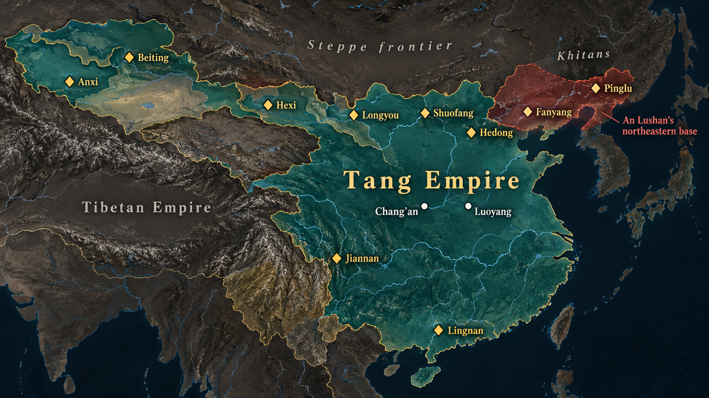
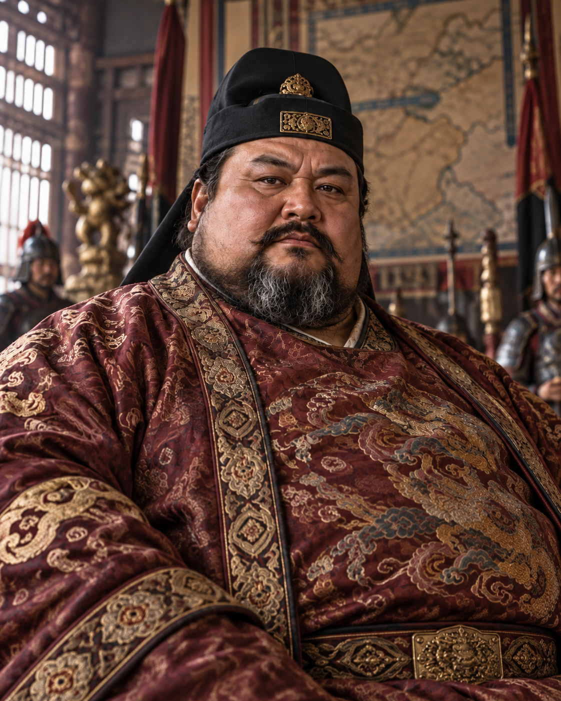

An Lushan’s Rebellion Changed Tang Government and Society
The rebellion shifted power to regional armies and reshaped taxation, trade, and political life.
755–763An Lushan’s rebellion and its aftermath
Late 8th centuryNew taxes and growing regional markets
After 860Banditry, revolts, and local power
960Song reunification begins
The military background
Frontier defense shifted from rotating farmer-soldiers to professional armies.
Earlier fubing Farmer-soldiers in rotation Loyalty: household and land
→
Changing frontier needs Frontier thousands of miles distant Tibet and the Khitans: permanent threats Equal-field decay: households cannot equip
→
Professional troops Recruited long-service troops, 737 Militia muster abolished, 749 Loyalty: the commander who pays
Military power became permanent and regional.
Source: Textbook, ch. 5, pp. 84–85.
The military trade-off
The Tang replaced an inadequate army with one that created a new danger.
Question
Fubing militia
Professional frontier army
Cost to the state
Low
High
Military effectiveness
Inadequate
Excellent
Where loyalty ran
Household and land
The commander
Between campaigns
Dissolved
Persisted
An inadequate army traded for a dangerous one. The court had no third option.
Source: Textbook, ch. 5, pp. 84–85. Dates and institutional context added for historical background.
Pause & Reflect
What alternative did the Tang have?
Could the Tang have defended a frontier this large without professional regional armies, or was this simply the cost of defending a large empire?
Two minutes. Name one alternative, then test it against distance, supply, and cost.
Source: Textbook, ch. 5, pp. 84–85.
Frontier commands
Tang military governors commanded troops across a wide frontier zone.

Ten frontier commands, c. 742–745 · An Lushan’s later northeastern base highlighted
First jiedushi appointments c. 710–711; ~10 commands by 742
Shi = commissioner, envoy — authority lent, expected back
The court appointed commissioners; what it got were governors
Each grant answered a real problem: act, tax, appoint
Source: Textbook, ch. 5, p. 84. Dates and office terminology added for historical background.
Movement II
The Rise of An Lushan
How does one frontier general come to hold the empire's best armies?
Who Was An Lushan?
A Man of the Frontier
Half Sogdian, half Turk — a true child of the borderlands
A professional soldier from a family of soldiers
Made his name fighting the Khitans of Manchuria
A Man of Power
Commands the northern Hebei frontier army from 744
By the 750s controls the empire's northeastern commands
At his back: 100,000+ veteran troops
He is exactly the kind of man the new system was built to promote.

The Collision at Court
752: chancellor Li Linfu dies — the balance at court breaks
Power passes to Yang Guozhong, Yang Guifei's cousin
An Lushan and Yang Guozhong quarrel over control of the government
Each man convinces himself the other is plotting his destruction
December 755: An Lushan marches south from Fanyang — claiming secret orders to remove Yang Guozhong
Ebrey's phrase: the quarrel "led to open warfare."
Movement III
The Rebellion, 755–763
Eight years that hollowed out an empire
The Storm Breaks, 755–756
An's veterans strike south toward Luoyang — the eastern capital falls within weeks
Early 756: An Lushan proclaims his own dynasty — the Great Yan
The court's hastily recruited troops are no match for veterans
Loyal armies hold the Tong Pass, shielding Chang'an —
— until the court orders them out to attack: the army is destroyed (summer 756)
The road to Chang'an lies open
Flight — and the Mawei Mutiny
Xuanzong abandons Chang'an, fleeing west toward Sichuan
At the Mawei post-station, his escort mutinies
The soldiers kill Yang Guozhong — then refuse to march until Yang Guifei dies too
The heir apparent breaks away northwest; proclaimed Emperor Suzong (756)
Xuanzong, informed afterward, does not contest it
The flight to Shu (Sichuan), Ming-dynasty handscroll after Qiu Ying. Freer Gallery of Art / Wikimedia Commons
Recovery — at a Price
Suzong's problem: loyal armies exist, but not enough of them
The solution: call in the Uighurs — Turkic allies from the steppe
757: Tang and Uighur forces retake Chang'an and Luoyang
The price: the Uighurs loot the capitals and leave only when paid off in silk
Afterward: forced silk-for-horses trade at extortionate rates, year after year
The dynasty is saved by foreign cavalry it can never again refuse.
The Rebellion Devours Itself
757: An Lushan — half-blind, violently paranoid — is murdered by his own son, An Qingxu
759: An's general Shi Siming kills An Qingxu and takes over the rebellion
761: Shi Siming is murdered by his own son, Shi Chaoyi
763: Shi Chaoyi, defeated and abandoned, takes his own life — the war ends
Four rebel emperors in eight years — each destroyed from within
This is why Chinese sources call it the An–Shi Rebellion.
How It Ended: Peace by Pardon
No final victory — the court buys the surrender of the remaining rebel commanders
Rebel generals are pardoned and appointed military governors of the very regions they held
In key provinces the governors now act like warlords:
— they pay no taxes to the center
— they appoint their own subordinates
— they pass their posts to their heirs
The war ends in 763 — but the northeast never truly returns.
Regional power
Provincial governors began to act like hereditary local rulers.
Military
Commanders controlled professional troops and passed authority to heirs.
Administration
Governors appointed their own subordinates; military men displaced civil officials.
Revenue
Some key regions paid no taxes to the central government.
The emperor remained, but the center no longer monopolized military and fiscal power.
Source: Textbook, ch. 5, p. 85.
Pause & Reflect
Who bears responsibility when every decision made sense at the time?
The court needed frontier armies, delegated authority, pardoned rebels, and accepted local power. Where does responsibility lie?
Two minutes. Pick one decision, defend it, then show how it compounded.
Source: Textbook, ch. 5, pp. 84–85.
Synthesis
The Tang state survived 755 by sharing power, then lost the capacity to reunify China.
Structural problem Distant frontiers required permanent regional armies
→
Necessary concessions Governors retained troops, taxes, and appointments
→
Fragmentation Local regimes endured until Song reunification began in 960
No single villain. The system made the court dependent on regional armies.
Key terms
Keep these people, policies, and sources in view.
Politics and military
An Lushan · frontier general and rebel Military governor · regional commander with civil authority Huang Chao · late Tang rebel leader
Economy
Salt monopoly · state revenue system Jiangnan · prosperous southern region Notes of exchange · instruments that eased coin shortages
Sources and periods
Dunhuang documents · records of daily and official life Five Dynasties and Ten Kingdoms · fragmented era before 960
Five-minute classroom activity
Use the lecture’s evidence to answer Review Question 7.
What were the underlying military causes and the immediate political consequences of the An Lushan Rebellion during Emperor Xuanzong’s reign?
Open your reading-guide answer to Q7 and revise it. Add one thing the lecture gave you that the textbook did not. No guide? Write 3–5 sentences cold.
Textbook review question · Chapter 5
Conclusion
The Tang survived the rebellion by compromising with regional military power.
Political change
Military governors gained control of armies, appointments, and local revenue.
Economic change
New taxes and less market regulation helped trade expand while landholding concentrated.
Historical evidence
Dunhuang documents reveal everyday life beyond the imperial court.
Independent Study · Online hour
Tang society after the rebellion
Changing frontiers · land and taxation · the salt monopoly · trade · palace armies · Han Yu · Dunhuang · late Tang instability · the road to 960
This hour answers Review Question 8: how the state’s retreat from economic management stimulated commerce.
Tang’s changing frontiers
The rebellion weakened Tang influence across Central and Southeast Asia.
The Tang withdrew forces from the western frontier to fight An Lushan.
Tibet expanded its influence over Silk Road cities.
Nanzhao attacked Tang prefectures in northern Vietnam; Vietnam became independent in the tenth century.
New regional powers
Balhae, Tibet, and Nanzhao consolidated states along Tang borders.
The late Tang no longer aimed to dominate Central Asia as the early Tang had.
Source: Textbook, ch. 5, p. 85.
Land and taxation
The Tang abandoned equal-field land allocation and taxed actual holdings.
Before the rebellionEqual-field land assignments and standard household taxes
AfterwardLand could be bought and sold more freely
New tax basisTaxes reflected actual landholding and were paid twice a year
The new system matched taxes to property, but debt pushed land toward the wealthy.
Source: Textbook, ch. 5, p. 85.
The salt monopoly
Salt taxes became the central government’s most effective revenue source.
More than ½of central revenue came from salt by 779
The state taxed salt indirectly by controlling production and distribution and charging licensed merchants a surcharge.
A specialized Salt Commission administered the system.
Source: Textbook, ch. 5, p. 85.
Trade after state retreat
Less government control over land and markets helped commerce expand.
Markets opened in more towns; provincial capitals became trade centers.
Silver bullion and notes of exchange helped address coin shortages.
Southern Jiangnan cities grew as refugees and merchants moved south.
Source: Textbook, ch. 5, p. 85.
The court tries to recentralize
The palace army failed to solve the Tang court’s dependence on military factions.
Regional commanders grow stronger Local military power limits the court
→
Palace army created Intended to counter provincial troops
→
Eunuchs gain command They dominate court affairs in the early ninth century
Attempts to restore central control created new power brokers inside the palace.
Source: Textbook, ch. 5, p. 86.
Late Tang scholarship
Han Yu called scholars back to the Confucian classics and a stronger state.
Political argument
Han Yu opposed provincial fragmentation and supported stronger central government.
He promoted a plain “ancient style” of prose.
He traced the Confucian Way through the Duke of Zhou, Confucius, and Mencius.
His attack on a Buddha relic offended the emperor.
Source: Textbook, ch. 5, p. 90.
Dunhuang
The Dunhuang cave preserved records of Tang life far beyond the court.
After 1000A Buddhist cave temple was sealed as invasion threatened the region.
1900A Daoist monk discovered the hidden collection.
1907–1908The bulk of the scrolls was sold to foreign scholars.
The cache included Buddhist sutras and about 13,500 paper scrolls containing many kinds of texts.
Source: Textbook, ch. 5, p. 90.
What the documents reveal
Dunhuang records let historians reconstruct ordinary social and economic life.
Family and work
Bills of sale, service contracts, and forms for divorce, adoption, and dividing family property.
Learning and worship
Calendars, primers, Buddhist texts, and charters of lay religious associations.
Local government
Household registers, lists of eminent families, and government documents.
These sources make people, households, and local institutions visible alongside emperors.
Source: Textbook, ch. 5, pp. 90–91.
Late Tang instability
After 860, banditry and rebellion further weakened the Tang state.
Bandit groups attacked merchants, tax convoys, and walled cities.
Huang Chao, a failed examination candidate and salt merchant, led the most successful group.
His forces captured Guangzhou in 879 and Chang’an two years later.
Power moved local
After 860, regional strongmen could build armies and claim kingship or imperial titles.
Source: Textbook, ch. 5, p. 91.
The transition to 960
In 960, the Song dynasty began a new bid to reunify China.
South
The Ten Kingdoms remained divided among regional rulers, but their governments promoted trade and taxed commerce.
North
Five Dynasties rose and fell around Kaifeng; Chang’an and Luoyang had been devastated by war.
In 960, the Song dynasty began the next effort to reunify China.
Source: Textbook, ch. 5, p. 91.
×
Sogdians
An Iranian-speaking Central Asian people centered on the oasis cities of Samarkand and Bukhara (in modern Uzbekistan). The Sogdians were the great merchant intermediaries of the Silk Road — their language served as its trade lingua franca — and Sogdian communities lived throughout Tang China. An Lushan's father was Sogdian; "An" was the Chinese surname conventionally used by Sogdians from Bukhara.
×
Khitans
The dominant nomadic people of northern Manchuria in the eighth century, and the chief military threat on the Tang's northeastern frontier — the wars in which An Lushan made his reputation. Remember the name: in Chapter 8 the Khitans return as founders of the Liao Dynasty, one of the great rival empires of the Song era.
×
Uighurs
A Turkic people who built a steppe empire on the ruins of the old Turk khaganates in the 740s, dominating Mongolia. As Tang allies they supplied the cavalry that retook the capitals in 757 — then looted them, demanded silk payoffs, and locked the Tang into a forced silk-for-horses trade at prices Ebrey calls "extortionate." Their empire broke up in the 840s.